Perkembangan Android
Dibuat oleh Christopher ( 131111629 )
Sejarah Awal Berdirinya Sistem Operasi Android
Perkembangan Android dimulai sejak awal era 2000an
Sebelum diakuisisi oleh Google, operating system (OS) ini dikembangkan perusahaan bernama Android Inc.
Perusahaan yang didirikan di Palo Alto, California pada Oktober 2003 ini digawangi oleh Andy Rubin, yang juga dikenal sebagai Bapak Android bersama dengan Rich Miner, Nick Sears dan Chris White.
Pada perkembangan selanjutnya, akhirnya Android dibeli oleh Google hingga pada tahun 2008 lalu dirilis lah HTC Dream, ponsel pertama yang dibekali dengan sistem operasi Android.
Android 1.0 & 1.1: Astro (Alpha) & Bender (Beta)
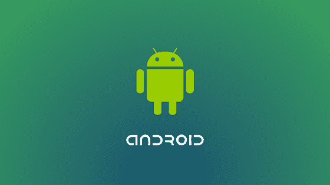Kedua versi awal Android ini mungkin agak asing kamu dengarkan. Pasalnya versi Android 1.0 Astro (Alpha) dan Android 1.1 Bender (Beta) ini belum diluncurkan secara publik untuk kebutuhan komersil.
Platform Android sendiri pertama kali diluncurkan pada September 2008 dengan andil Andy Rubin yang saat ini dikenal sebagai Bapak Android.
Walau belum menggunakan nama makanan manis, kedua sistem operasi Android ini tentu menjadi pionir. Pasalnya di sinilah Android bermula lewat smartphone pertama, HTC Dream
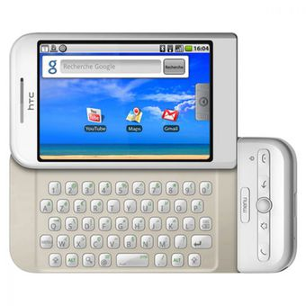
Android 1.5: Cupcake
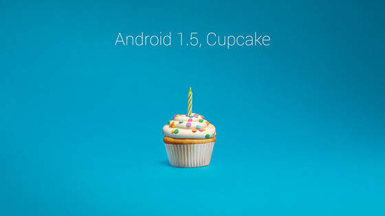Selang setahun kemudian pada tahun 2008, OS Android baru lahir dengan nama Cupcake (versi 1.5).
Di versi inilah nama cemilan manis mulai dipakai.
Cupcake untuk pertama kalinya menghadirkan on-screen keyboard, menggantikan papan ketik fisik yang sebelumnya dipakai oleh perangkat Android.
Perubahan besar lainnya adalah kemampuan merekam video yang baru ditambahkan di Cupcake. Google turut membuka SDK widget Android sehingga para developer pihak ketiga bisa membuat widget sendiri untuk OS tersebut.
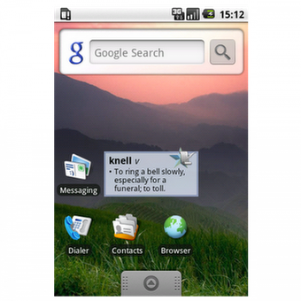
Android 1.6: Donut

Tentu pada awal perilisannya, sistem operasi Android tetap memiliki banyak bug yang pengembangnya perlu mengadakan perbaikan. Hal ini dilakukan pada Android 1.6 Donut yang dirilis pada 15 September 2009.
Android pun menambahkan beberapa pembaruan, terutama dukungan pada layar smartphone yang lebih besar
Dimana Android sudah bisa disematkan dalam di perangkat dengan beberapa ukuran layar yang berbeda.
Selain itu, untuk memudahkan pengguna dalam menjelajahi antarmuka ponsel, muncul fitur baru berupa search box yang ada dalam home screen.
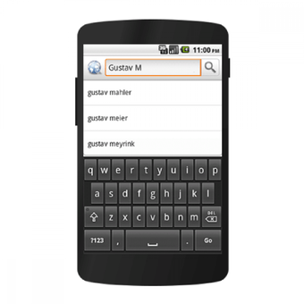
Android 2.0 & 2.1: Eclair
Sama seperti versi sebelumnya, Android 2.0 - 2.1 Eclair masih berfungsi untuk menutupi bug yang masih ditemukan pada sistem operasi mobile ini.
Di samping itu, Android juga menambah berbagai fitur di dalamnya.
Mulai dari dukungan Bluetooth hingga fitur kamera yang mulai menjadi nilai jual smartphone kala itu.
Tidak kalah penting, untuk pertama kalinya Android Eclair ini membawa fitur baru untuk mempermudah pengguna dalam bepergian, yakni Google Map.
Fitur peta yang kelak sangat populer itu datang lengkap dengan turn-by-turn navigation dan panduan suara (voice guidance) yang masih ada hingga sekarang.
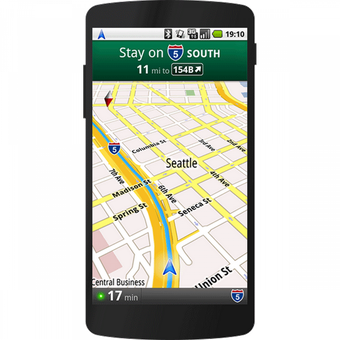
Tidak kalah penting, untuk pertama kalinya Android Eclair ini membawa fitur baru untuk mempermudah pengguna dalam bepergian, yakni Google Map.
Back To TOP
Android 2.2: Froyo (Frozen Yoghurt)
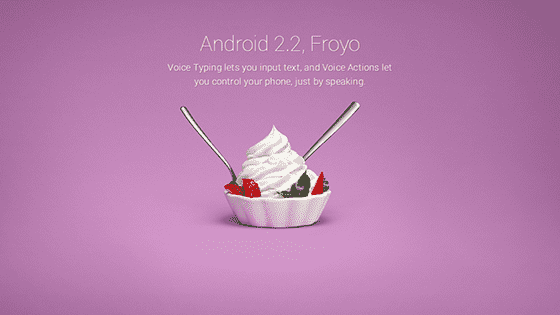Mulai versi ini Android tampaknya sudah mulai dikenal luas oleh berbagai brand smartphone. Android 2.2 Frozen Yoghurt alias Froyo ini dirilis pertama kali pada tanggal 20 Mei 2010.
Walaupun sudah mulai dipergunakan pada beberapa brand, namun tetap saja Android masih kalah bersaing dengan Symbian yang mendominasi pasar featured phone.
Android 2.2 Froyo memberikan peningkatan pada kecepatan kerja dan peningkatan lain termasuk tambahan Voice Action, dukungan mobile hot spot dan kunci PIN untuk lock screen, melengkapi pattern lock yang sebelumnya sudah ada di Android. 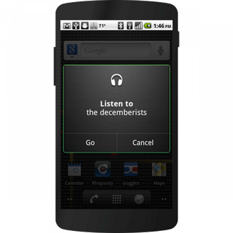
Android 2.3: Gingerbread
Belum setahun berselang lagi, Android 2.3 Gingerbread kembali diluncurkan pada Desember 2010 dengan berbagai peningkatan yang cukup signifikan. Hal ini terutama pada tampilan tatap muka alias user interface yang digunakan.
Pada Versi ini, Google mulai menerapkan fitur battery management untuk menginformasikan pengguna soal aplikasi atau fungsi mana yang menguras baterai.
yang menyebabkan banyak brand smartphone mulai melirik untuk menggunakan sistem operasi Android. Salah satunya Samsung Galaxy series yang populer hingga saat ini.
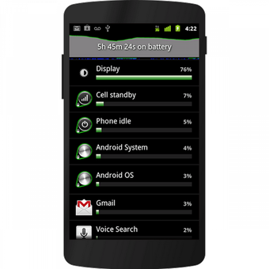
Android 3.0 & 3.2: Honeycomb
Untuk para pengguna smartphone mungkin akan agak asing dengan versi Android yang satu ini. Android 3.0 - 3.2 Honeycomb yang menggunakan ikon lebah ini memang diperuntukkan penggunaannya untuk perangkat tablet.
Honeycomb mengusung beberapa perubahan dibanding OS Android untuk smartphone, seperti warna tema biru dan preview untuk widget.
Tombol-tombol navigasi pun ditampilkan Honeycomb langsung di layar (virtual buttons) sehingga perangkat tak membutuhkan tombol fisik.
Android 4.0: Ice Cream Sandwich
Selain itu, Android pun juga merilis versi Android 4.0 Ice Cream Sandwich yang kembali diperuntukkan untuk perangkat smartphone. Android 4.0 Ice Cream Sandwich sendiri dirilis pada 19 Oktober 2011 silam.
Punya versi nama paling panjang hingga saat ini, Android 4.0 Ice Cream Sandwich memberikan banyak pembaruan. Mulai dari animasi yang semakin halus, sederhana dan mudah digunakan.
Ice Cream Sandwich turut menghadirkan sejumlah fitur baru seperti face unlock, rekaman penggunaan data internet, aplikasi e-mail dan kalender baru, berikut dukungan Near-Field Communication (NFC).
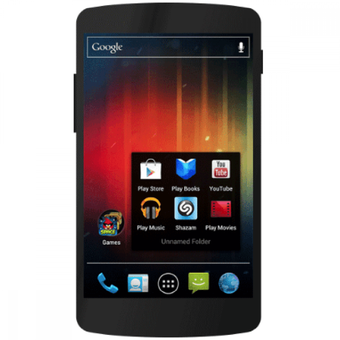
Android 4.1 & 4.3: Jelly Bean
Peningkatan signifikan terasa saat menggunakan Android 4.1 - 4.3 Jelly Bean.
Sistem operasi ini sendiri pertama kali dirilis pada Juni 2012 dengan membawa sejumlah peningkatan terutama di sektor pengolahan grafis.
Dengan begini, tentu Android 4.1 - 4.3 Jelly Bean bisa memberikan peningkatan fungsi pada user interface dan teknologi Vsync yang digunakannya.
Pada Versi ini, Google mulai menerapkan teknologi asisten digital Google Now yang bisa diakses dengan sapuan jari dari home screen.
Google turut mengimplementasikan “Project Butter” yang bertujuan mempermulus proses navigasi di Android lewat teknik triple buffering grafis.
Hasilnya, stuttering di Android jauh berkurang sehingga terasa lebih mulus.
Android 4.4: KitKat
Menggunakan nama brand cemilan terkenal, Android 4.4 KitKat pertama kali dirlis pada Oktober 2013. Versi Android ini pun bisa dikatakan menjadi favorit dari hampir keseluruhan pengguna smartphone di dunia.
Tampilan Kitkat dipermak supaya tampak lebih modern, dengan akses warna putih dan desain ulang aplikasi-apliaksi bawaaan dengan warna lebih terang.
Kitkat ikut memperkenalkan frasa perintah suara “OK Google” yang digunakan untuk memanggil Google Now dengan ucapan, kapanpun dikehendaki oleh pengguna. Ada juga phone dialler baru.
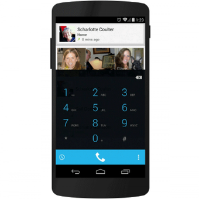
Android 5.0 & 5.1: Lollipop
Mulai beberapa versi ke belakang, Android dan Google pun mulai secara rutin memperbarui sistem operasi mereka dalam selang waktu setahun. Termasuk Android 5.0 - 5.1 Lollipop yang dirilis dan diresmikan pada Juni 2014.
Bisa dibilang Android 5.0 - 5.1 Lollipop menjadi pionir dibuatnya smartphone flagship dengan spesifikasi cukup mumpuni.
Karena Pada Versi Android ini sudah mendukung arsitektur 64-bit yang sudah memungkinan penggunaan RAM di atas 3GB. Salah satunya ASUS Zenfone 2 yang sudah mengusung RAM 4GB saat itu.
Pada Versi ini Google mulai menerapkan filosofi desain antarmuka “Material Design” yang serba “flat” di Android.
Di luar tampilan kosmetik ada banyak perubahan lain di Android Lollipop, termasuk debut Android Runtime menggantikan Dalvik VM yang sudah uzur, dan dukungan format gambar RAW.
Android 6.0: Marshmallow
Android 6.0 Marshmallow menjadi suksesor dari versi Android sebelumnya. Sistem operasi ini sendiri pertama kali diperkenalkan pada Mei 2015 dan mulai dirilis pada Oktober 2015 silam.
Sistem operasi ini secara jelas memberikan peningkatan pada sistem keamanan dengan dihadirkannya fingerprint sensor sebagai sistem keamanan biometrik yang digunakan.
Selain digunakan untuk mengunci layar, fingerprint sensor ini dapat digunakan untuk otentikasi Google Play Store dan pembelian dengan menggunakan Android Pay.
Pada Versi ini terjadi sejumah peningkatan tampilan yang lebih jauh.
Misalnya penambahan search bar untuk mempermudah pengguna menemukan aplikasi yang dicari.
Permissions pada aplikasi kini dirincikan satu per satu sehingga bisa lebih diteliti oleh pengguna.
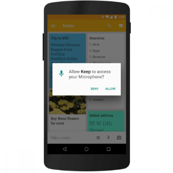
Android 7.0 & 7.1: Nougat
Android 7.0 - 7.1 Nougat pertama kali diperkenalkan pada Juni 2016 dengan menampilkan ikon robot Android dengan batangan Nougat.
Sistem operasi Android 7.0 - 7.1 Nougat mengalami perubahan dari segi tampilan antarmuka. Selain itu ada juga fitur splitscreen untuk membagi tampilan layar untuk dua aplikasi sekaligus.
Google menambahkan dukungan multi-window sehingga pengguna bisa menjalankan dua aplikasi secara bersamaan dalam jendela terpisah yang diposisikan secara berdampingan.
Fitur Data Saver pada Android Nougat membantu pengguna dalam memonitor dan membatasi penggunaan kuota data internet. Tambahan lain termasuk mode VR dan 63 emoji baru.
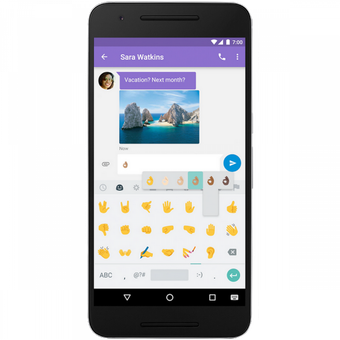
Android 8.0 & 8.1: Oreo
Android 8.0 - 8.1 Oreo menjadi sistem operasi Android paling terbaru hingga saat ini. Sistem operasi ini dirilis secara stabil mulai Agustus 2017 dan sudah mengalami pembaruan lewat versi Android 8.1 Oreo yang terbaru.
Sistem operasi ini menawarkan pengalaman multitasking yang makin mumpuni dibanding versi sebelumnya.
Selain itu ada juga Project Treble yang memungkinkan pengguna mendapat pembaruan lebih cepat.
Bagian notifikasi ikut dirombak. Pengguna bisa mengatur notifikasi mana saja yang akan ditampilkan dan apa yang dilakukan perangkat saat menyuguhkannya.
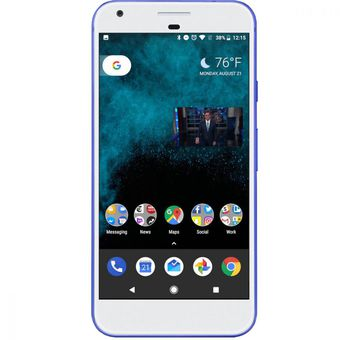
Android 9.0: Pie
Terakhir ada Android 9.0 Pie yang secara resmi diperkenalkan pada Agustus 2018. Sistem operasi Android ini memberi banyak ubahan, terutama untuk HP dengan desain baru.
Pade Versi Ini Android Pie mengganti tiga tombol navigasi dengan tombol tunggal berbentuk elips.
Karenanya, Android Pie pun lebih mengandalkan gestur gerakan-gerakan jari untuk melakukan hal-hal seperti multitasking.
Fitur lain termasuk “Digital Wellbeing” untuk menginformasikan soal pola pemakaian perangkat, Adaptive Battery untuk membatasi pemakaian baterai oleh aplikasi, dan App Action yang langsung menjalankan fitur aplikasi dari app drawer.
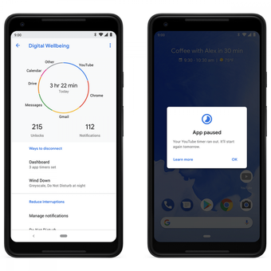